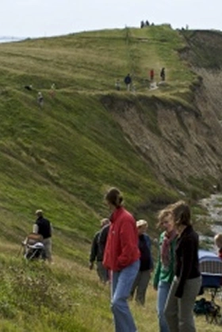

Fyns Hoved
Fyns Hoved på spidsen af Hindsholm er et sandt overflødighedshorn af naturoplevelser. Med den imponerende Baesbanke i hovedsæde kan I her opleve et mangfoldigt dyreliv, installationer fra 2. verdenskrig og ældgammelt istidslandskab.
15 km fra Hesselgaard
